Example - Spring Mass System¶
This example provides a simple demonstration of MLMCPy functionality. The goal
is to estimate the maximum displacement of a spring-mass
system with random stiffness using Multi-Level Monte Carlo (MLMC) and compare to standard Monte Carlo simulation. The example covers all steps for computing MLMC estimators using MLMCPy, including defining a random input parameter
(spring stiffness) using a MLMCPy random input, creating a user-defined computational model (spring mass numerical integrator) that uses the standardized MLMCPy interface, and running MLMC with a hierarchy of these models (according to time step size) to obtain an estimator for a quantity of interest (max. displacement) within a prescribed precision. The full source code for this example can be found in the MLMCPy repository: /MLMCPy/examples/spring_mass/from_model/run_mlmc_from_model.py
{kind=link}
Problem Specification¶
The governing equation of motion for the system is given by
(1)¶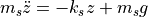
where 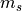 is the mass, 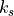 is the spring stiffness,  is the acceleration due to gravity,
is the acceleration due to gravity,  is the vertical displacement
of the mass, and 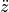 is the acceleration of the mass. The
source of uncertainty in the system will be the spring stiffness, which is
modeled as a random variable of the following form:
is the vertical displacement
of the mass, and 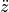 is the acceleration of the mass. The
source of uncertainty in the system will be the spring stiffness, which is
modeled as a random variable of the following form:
(2)¶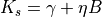
where  and
and  are shift and scale parameters,
respectively, and 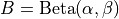 is a standard Beta
random variable with shape parameters
are shift and scale parameters,
respectively, and 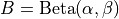 is a standard Beta
random variable with shape parameters  and
and  . Let
these parameters take the following values: 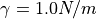,
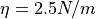, 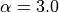, and 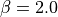. The mass
is assumed to be deterministic, 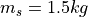, and the acceleration due
to gravity is 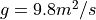.
. Let
these parameters take the following values: 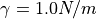,
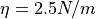, 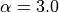, and 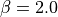. The mass
is assumed to be deterministic, 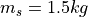, and the acceleration due
to gravity is 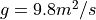.
With uncertainty in an input parameter, the resulting displacement,  , is a random variable as well. The quantity of interest in this example with be the maximum displacement over a specified time window, 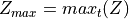. The equation of motion in Equation (1) can be numerically integrated over the time window with a specified time step, and the maximum of the resulting displacement time series can be taken to obtain 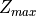.
, is a random variable as well. The quantity of interest in this example with be the maximum displacement over a specified time window, 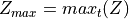. The equation of motion in Equation (1) can be numerically integrated over the time window with a specified time step, and the maximum of the resulting displacement time series can be taken to obtain 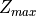.
The goal of this example will be to estimate the expected value of the maximum displacement, 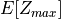, using the MLMC approach with MLMCPy and compare it to a Monte Carlo simulation solution. The MLMC expected value estimate of a random quantity,  , is as follows:
, is as follows:
(3)¶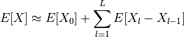
where  is the number of levels (and number of models of varying fidelity) used. Each expected value is approximated by it’s Monte Carlo estimator:
is the number of levels (and number of models of varying fidelity) used. Each expected value is approximated by it’s Monte Carlo estimator:
(4)¶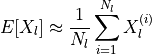
The MLMC method prescribes the number of samples to be taken on each level,  , based on a user-specified precision and the variance of the output on each level.
, based on a user-specified precision and the variance of the output on each level.
For this example, three levels will be employed, where each level corresponds to a maximum displacement predicted using a spring mass simulator model with varying time step. First, the random spring stiffness is represented using a MLMCPy random input, then a spring mass model is created and three instantiations of it are made with different time steps, then MLMC is used to estimate the expected maximum displacement to a prescibed precision.
Step 1: Initialization; define the random input parameter¶
Begin by importing the needed Python modules, including MLMCPy classes and the SpringMassModel class that defines the spring mass numerical integrator:
import numpy as np
import timeit
from spring_mass import SpringMassModel
from MLMCPy.input import RandomInput
from MLMCPy.mlmc import MLMCSimulator
Below is a snippet of the SpringMassModel class, the entire class can be found in the MLMCPy repo (/MLMCPy/examples/spring_mass/from_model/spring_mass_model.py):
from MLMCPy.model import Model
class SpringMassModel(Model):
"""
Defines Spring Mass model with 1 free param (stiffness of spring, k). The
quantity of interest that is returned by the evaluate() function is the
maximum displacement over the specified time interval
"""
def __init__(self, mass=1.5, gravity=9.8, state0=None, time_step=None,
cost=None):
Note that user-defined models in MLMCPy must inherit from the MLMCPy abstract class Model and implement an evaluate function that accepts and returns numpy arrays for inputs and outputs, respectively. Here, the time_step argument governs numerical integration and will define the three levels used for MLMC.
The first step in an analysis is to define the random variable representing the model inputs. Here, the spring stiffness  is defined by a Beta random variable and created with MLMCPy as follows:
is defined by a Beta random variable and created with MLMCPy as follows:
# Step 1 - Define random variable for spring stiffness:
# Need to provide a sampleable function to create RandomInput instance.
def beta_distribution(shift, scale, alpha, beta, size):
return shift + scale*np.random.beta(alpha, beta, size)
stiffness_distribution = RandomInput(distribution_function=beta_distribution,
shift=1.0, scale=2.5, alpha=3., beta=2.)
The RandomInput class is initialized with a function that produces random samples and any parameters it requires. See the Input Module Documentation for more details about specifying random input parameters with MLMCPy.
Step 2: Generate reference solution using standard Monte Carlo simulation¶
Here a reference solution is generated using standard Monte Carlo simulation and a prescribed number of samples. This is done by instantiating a spring mass model (time step = 0.01) and evaluating the model for random samples of the stiffness random variable defined in Step 1. The code to do so is as follows:
# Step 2: Run standard Monte Carlo to generate a reference solution and target precision
num_samples = 5000
model = SpringMassModel(mass=1.5, time_step=0.01)
input_samples = stiffness_distribution.draw_samples(num_samples)
output_samples_mc = np.zeros(num_samples)
start_mc = timeit.default_timer()
for i, sample in enumerate(input_samples):
output_samples_mc[i] = model.evaluate([sample])
mc_total_cost = timeit.default_timer() - start_mc
mean_mc = np.mean(output_samples_mc)
precision_mc = (np.var(output_samples_mc) / float(num_samples))
The total time to compute the solution, the mean estimate, and the resulting precision in the estimate are stored for comparison to MLMC later. Note that this precision will be used as the target threshold for MLMC in Step 4.
Step 3: Initialize a hierarchy (3 levels) of models for MLMC¶
In order to apply the MLMC method (Equation (3)), multiple levels of models (defined by cost/accuracy) must be defined. The following code initializes three separate spring mass models defined by varying time step (the smaller the time step, the higher the cost and accuracy):
# Step 3 - Initialize spring-mass models for MLMC. Here using three levels
# with MLMC defined by different time steps
model_level1 = SpringMassModel(mass=1.5, time_step=1.0)
model_level2 = SpringMassModel(mass=1.5, time_step=0.1)
model_level3 = SpringMassModel(mass=1.5, time_step=0.01)
models = [model_level1, model_level2, model_level3]
Step 4: Run MLMC to estimate the expected maximum displacement¶
With a random input defined in Step 1 and multiple fidelity models defined in Step 3, MLMC can now be used to estimate the maximum displacement using the MLMCSimulator class. Here, MLMC is used to obtain an estimate with the same level of precision that was calculated using Monte Carlo in Step 2. The following code executes the MLMC algorithm and times it for comparison later:
# Step 4 - Initialize MLMC & predict max displacement to specified error.
mlmc_simulator = MLMCSimulator(stiffness_distribution, models)
start_mlmc = timeit.default_timer()
[estimates, sample_sizes, variances] = \
mlmc_simulator.simulate(epsilon=np.sqrt(precision_mc),
initial_sample_sizes=100,
verbose=True)
mlmc_total_cost = timeit.default_timer() - start_mlmc
Note that MLMCSimulator uses an initial setup to estimate output variances, where the provided models are executed a number of times equal to the initial_sample_sizes argument. See Multi-Level Monte Carlo Simulator Documentation for more details about the MLMCSimulator API.
Step 5: Compare the MLMC and Monte Carlo results¶
Finally, the MLMC estimate is compared to the Monte Carlo reference solution.
print 'MLMC estimate: %s' % estimates[0]
print 'MLMC precision: %s' % variances[0]
print 'MLMC total cost: %s' % mlmc_total_cost
print "MC # samples: %s" % num_samples
print "MC estimate: %s" % mean_mc
print "MC precision: %s" % precision_mc
print "MC total cost: %s" % mc_total_cost
print "MLMC computational speedup: %s" % (mc_total_cost / mlmc_total_cost)
For one particular execution of this script in a single-core environment, the following results were obtained. Note that MLMC used 5553, 386, and 3 samples (model evaluations) on levels 1, 2, and 3, respectively, compared with 5000 samples of level 3 used by Monte Carlo simulation. The resulting computational speed up was 2.62
| Description | MLMC Value | MC Value |
|---|---|---|
| Estimate | 12.2739151773 | 12.390705590117555 |
| Error | 0.045171289 | 0.071619124 |
| Precision | 0.009916230329196151 | 0.010780941000560835 |
| Total cost (seconds) | 0.63 | 1.14 |